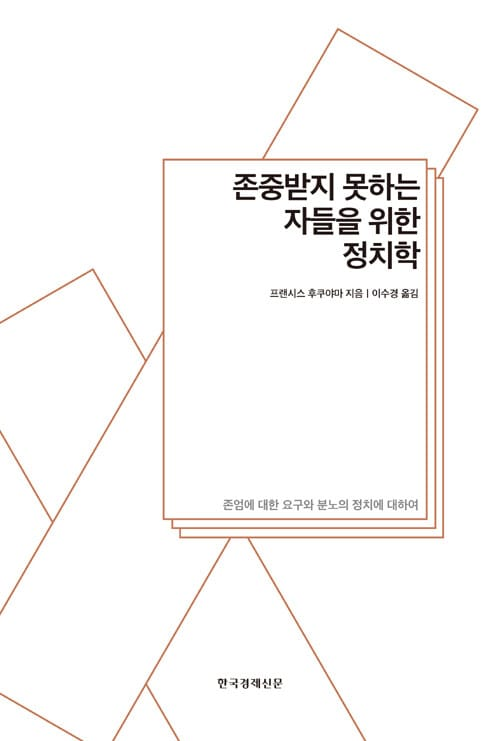
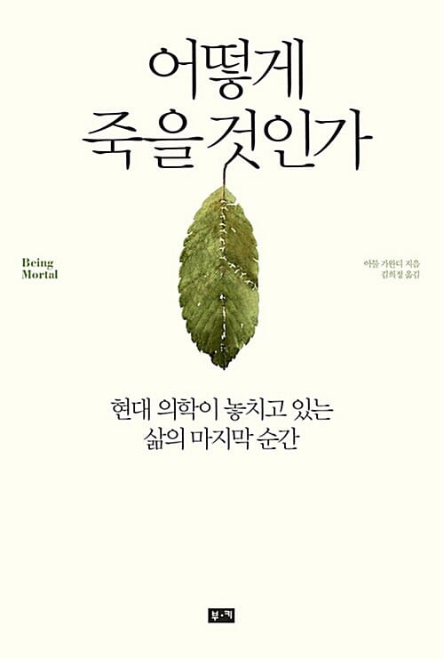
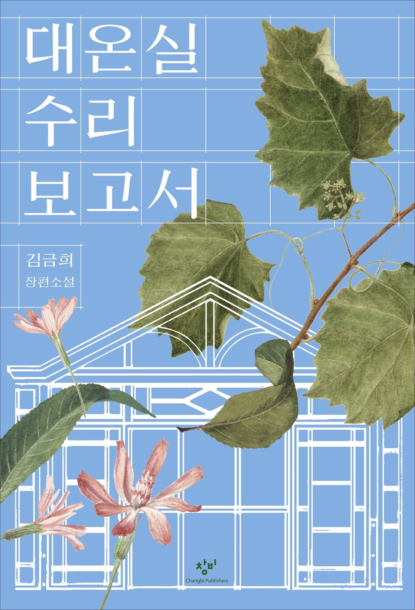
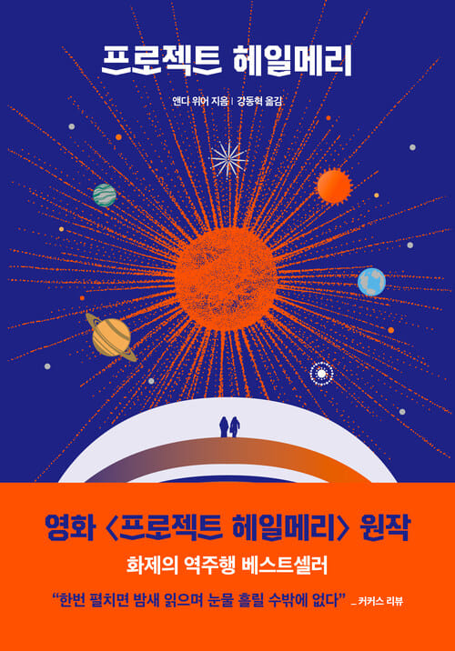

NEXT READ · 15번째 모임존중받지 못하는
2026. 09. 30. WEDNESDAY
존중받지 못하는
자들을 위한 정치학

BOOKJEOK BOOKJEOKREADING CLUB VOL. 15
한 권의 책에서 시작된 수많은 이야기.
우리가 함께 읽고, 묻고, 나누었던 시간을 기록합니다.



한 권씩, 한 걸음씩.
우리만의 독서 지도를 그려갑니다.
이번에는 어떤 이야기가 기다리고 있을까요?
2026. 09. 30. WEDNESDAY

BOOKJEOK BOOKJEOK세 권의 제목에서 다음 대화를 위한 질문을 꺼냈습니다.
삶을 돌아보는 책부터 먼 세계를 상상하는 이야기까지. 북적북적의 책장에는 서로 다른 시선이 나란히 놓여 있습니다. 세 권의 제목에서 출발한 질문을 적어 봅니다.
모든 책 살펴보기THREE QUESTIONS FROM OUR SHELF
지난 책장 속 이야기를 다시 꺼내 봅니다.
다른 검색어를 입력하거나 필터를 바꿔보세요.